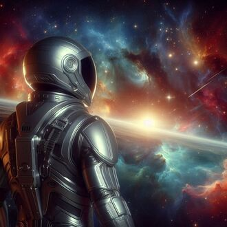
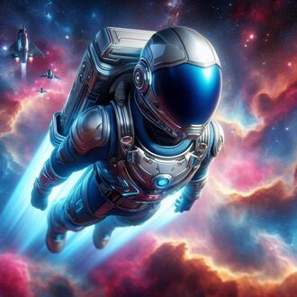
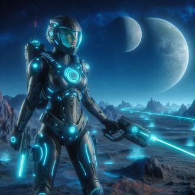
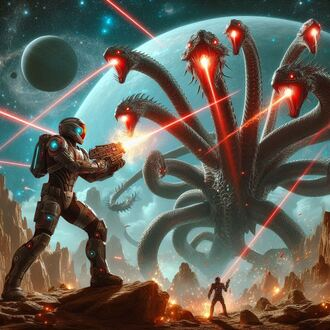
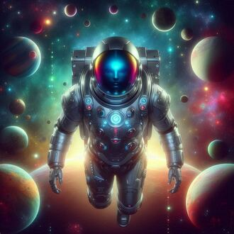
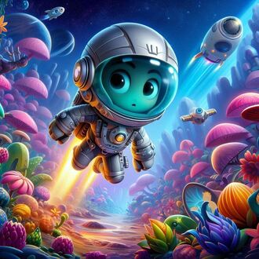

-
Astral
Descrição
Líder carismático da equipe, Astral manipula energia cósmica. Seu traje preto e prateado absorve energia estelar, tornando-o uma força estratégica e poderosa.
-
Zephyr
Descrição
Do planeta Aero, é um mestre do vento. Com um traje leve e aerodinâmico, cria tempestades e voa em alta velocidade, trazendo agilidade e força aérea à equipe.
-
Nova
Descrição
Originária de Pyro, controla fogo estelar. Seu traje vermelho e laranja é resistente ao calor extremo, e suas explosões flamejantes são essenciais em combate.
-
Hydra
Descrição
De Aqua, planeta aquático, controla marés e água. Com um traje azul-marinho adaptado para ambientes subaquáticos, ele pode transformar a água em armas sólidas e construtos defensivos.
-
Terra
Descrição
Nativa de Gaia, manipula plantas e minerais. Seu traje verde e marrom reflete sua conexão com a natureza, permitindo-lhe transformar o terreno em que luta para seu benefício.
-
Mira
Descrição
: Vinda de Luna, tem o poder de alterar a gravidade. Usa um traje que brilha no escuro e reflete a superfície lunar. Seu controle gravitacional é vital para a mobilidade e defesa da equipe.